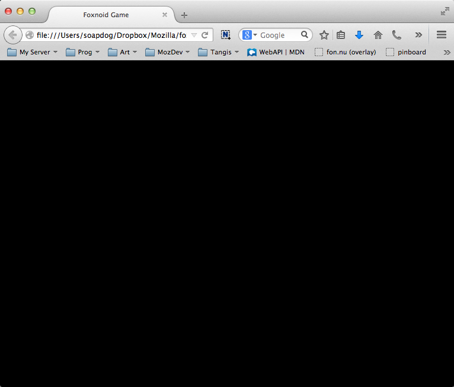

Инициализация Foxnoid
В этой главе мы узнаем, как начать нашу игру. Это может показаться простым и глупым, но эта книга делает маленькие шаги и пытается объяснить, почему мы делаем так, вместо простого вываливания кучи кода, который вы будете использовать, не понимая его. Я считаю, что программирование это сложный процесс. Вы можете организовать что-то, только если действительно понимаете что делаете. Без понимания это превращается в игру Сокобан с завязанными глазами.
Прежде чем говорить об инициализации игры, немного притормозим и разберём игровой цикл игры и её состояния.
Немного об игровом цикле
Вы можете рассмотреть игровой цикл с высоты птичьего полёта. В этом случае игра это то, что вы запускаете, играете и в конечном итоге закрываете. С точки зрения такой картины вы можете думать о трёх состояниях в игровом процессе. Игра запускается, играется или закрывается. Каждое из этих состояний может быть разбито на более мелкие состояния.
Если бы мы были парящим в небе орлом и могли использовать глаза, которыми природа нас наделила, то приблизили бы эти игровые состояния и посмотрели, из чего они состоят. Так как мы не орлы, я собираюсь использовать аналогию для пояснения. Представим игру как ужин за пределами дома.
Состояния игры
Состояния игры как аналогия ресторана
Первый этап — посещение ресторана и заказ еды. Это похоже на запуск, потому что когда этот процесс завершён, мы находимся в состоянии, когда еда уже заказана. В терминах игры это состояние, когда ваше приложение запускается и загружает свои библиотеки.
Второй этап происходит на кухне. Повар должен иметь под рукой ингредиенты, чтобы приготовить ваш заказ. Ингредиенты это ассеты, без которых еду нельзя правильно приготовить. Представьте, что повар бегает в супермаркет и обратно, пока ваш заказ готовится. Уверяю, это будет последний раз, когда вы ужинаете в этом месте.
В игре ассеты хранят все ресурсы, такие как изображения, звуки и вспомогательные файлы, которые нужно загрузить до начала игры. Мы все видели на веб-страницах, как они загружают и отображают разные элементы. При этом происходит много операций переформатирования, перекомпоновки и перерисовки. Мы научились не обращать на это внимание, но представьте, что это случилось бы в игре Супер Марио — вы пытаетесь играть, пока уровень и враги ещё загружаются. Это приводит к плохим впечатлениям.
Третий шаг — приготовление еды. С доступными ассетами повар может делать магию и подготовить хорошую тарелку. Это тот момент, где ваша игра использует все необходимые ресурсы для инициализации самой игры. В нашем примере с Супер Марио это загрузка карты и построение уровня.
Четвертый шаг — ужин! Это весёлый шаг (у нас это сам процесс игры).
Пятый шаг — ужин закончен и вы собираетесь домой. Это когда пользователь решает что пришло время и закрывает игру.
Симпатичная аналогия, но мы можем хоть немного сосредоточиться на разработке игры?
Перечисленные выше шаги необходимы всем играм, но в зависимости от ваших потребностей состояния будут варьироваться. Огромная игра, такая как недавняя Zelda, не может загрузить все свои ассеты за раз, потому что нет такой вещи, как бесконечная память компьютера. Если у вас есть огромная игра со множеством ассетов, то игра разбивается на части и вы просто загружаете всё необходимое, чтобы играть в эту часть игры.
Состояния игры это просто способ нарезать игру кубиками и управлять кусочками, чтобы вы могли сосредоточиться на одной задаче за раз. Можно думать об этом, как о сборочной линии подготовки вашей игры. Наиболее важным аспектом является то, что код каждого состояния сохраняется в долгосрочной перспективе. Вы можете использовать состояния игры подобно вашему шкафу с одеждой. Если бы это был просто пустой ящик, из которого вы выбросили вещи, то было бы действительно сложно одеться для ужина.
Если вы строите игру подобную Супер Марио, то должны иметь разное состояние для каждого отдельного экрана содержащего заголовок, параметры, карту, уровни, экраны победы и поражения. Всё это должно быть со своим состоянием, своей загрузкой ассетов и работать самостоятельно. Таким образом проще переключать фрагменты игры.
Игровые состояния в Phaser
Phaser содержит функции для состояния игры, как это видно из документации для класса State. Каждое состояние может быть самодостаточным и обрабатывать собственную загрузку ассетов, работать и переключаться в другое состояние. В основном, каждое состояние может содержать свою крошечную линию сборки.
Состояние Phaser является объектом JavaScript с методами, которые вы можете переопределить для обработки каждого из шагов, упомянутых в нашей аналогии с рестораном. Так, если вы желаете загрузить ассеты, то должны сделать это в функции preload() данного объекта. Если вы хотите собрать игровой уровень и построить экран для его отображения, то должны сделать это в функции create(). Процесс игры происходит в функции update() и т. д.
Мы будем говорить больше о состояниях игры когда начнём создавать Foxnoid.
Состояния игры Foxnoid
Foxnoid — игра в традициях Arkanoid. Это классическая аркадная игра, такая как Pacman, Pong, Tetris и другие. Давайте составим состояния, применяемые в нашей игре.
| Имя | За что отвечает |
|---|---|
| Preload | Загрузит все необходимые для игры ассеты. |
| Game | Текущая игра. |
| GameWin | Когда пользователь выигрывает. |
| GameOver | Когда пользователь проигрывает. |
Как вы можете видеть, в Foxnoid у нас будет четыре состояния. Первое загрузит все наши ассеты, а затем перейдёт к игре. Пользователь будет играть и в зависимости от результата мы переключаемся в состояние GameWin или GameOver.
Оставшуюся часть этой главы мы посвятим тому, что должно произойти перед переключением в состояние Preload. Есть некоторая инициализация кода, которую надо сделать до начала загрузки ассетов.
Что нужно инициализировать?
Наш код инициализации должен обработать всё необходимое перед тем как мы начнём переключать состояния. Он должен загрузить все обязательные библиотеки, необходимые для работы нашей игры (в нашем случае только Phaser), и инициализировать их. Остальное зависит от каждого состояния.
Инициализация Phaser
Создадим файл с именем init.js внутри папки js.
init.js: отвечает за инициализацию Phaser
var GameStates = {}; // <-- Объект для хранения всех наших игровых состояний
document.addEventListener("DOMContentLoaded", function() {
// Создание игры и внедрение её в div.
// Для получения подробной информации об объекте Phaser.Game смотрите
// http://docs.phaser.io/Phaser.Game.html
// Портретная ориентация игры
var width = 320;
var height = 480;
var game = new Phaser.Game(width, height, Phaser.CANVAS, "game");
});В первой строке мы создаём пустой объект. Он будет использоваться для хранения всех наших состояний игры, так что вместо четырёх глобальных переменных мы обойдёмся только одной.
Да, я мог бы использовать функцию и обойтись без глобальных переменных вообще, но эта книга ориентирована на новичков и я не хочу терять драгоценные страницы и вместо этого объяснять о замыканиях и безымянных функциях.
Как было сказано, те, кто понимают эти функции, могут ясно видеть, как легко можно было бы использовать их здесь. Просто ограничьте этот файл инициализации и будьте счастливы.
Строки с 3 до 16 содержат функцию обработчика событий DOMContentLoaded. Она будет выполняться один раз, когда весь DOM загружен. Внутри этого обработчика происходит инициализация нашей игры. На данный момент наша инициализация игры в основном загружает Phaser и определяет переменную game. Эта переменная является главным объектом, который используется для доступа к функциям Phaser. Вы можете узнать об этом больше в документации для класса Game.
В строке 14 мы вызываем Phaser.Game() с четырьмя параметрами. Первые два задают размеры используемого в нашей игре холста. Мы можем думать об этом, как о размере нашего желаемого экрана. Phaser может работать как с визуализацией Canvas, так и WebGL, но последняя не очень хорошо поддерживается на мобильных устройствах, так что для казуальных двумерных игр я рекомендую придерживаться Canvas. Четвертый параметр это идентификатор элемента DOM, который будет содержать холст. После выполнения этой строки Phaser инициализирует объект Canvas внутри указанного элемента.
Хотя мы создали файл init.js, но ещё не включили его в index.html. Давайте сделаем это.
index.html: включает файл init.js
<!DOCTYPE html>
<html>
<head>
<meta charset="UTF-8" />
<title>Foxnoid Game</title>
<link rel="stylesheet" href="css/style.css" />
<script defer src="js/phaser.min.js"></script>
<script src="js/init.js"></script>
</head>
<body>
<div id="game"></div>
</body>
</html>Если мы теперь откроем наш index.html в браузере, то увидим чёрный экран. Canvas работает, но поскольку ничего не делает, то остаётся чёрным.

Чёрный экран означает что всё хорошо
Скриншот выше чёрный, потому что наш холст чёрный и цвет фона в HTML также чёрный. После этой инициализации мы можем приступить к работе над состояниями нашей игры.
Резюме
В этой главе мы дали толкование игровых состояний и выяснили как мы можем использовать их, чтобы организовать нашу игру в виде управляемых фрагментов путём соединения логических вещей. Для игры Foxnoid мы решили построить четыре состояния и достигли точки, на которой выводится чёрный экран.
В следующей главе мы собираемся создать состояние игры Preload и загрузить все ресурсы.

Все материалы сайта доступны по лицензии Creative Commons «Attribution-NonCommercial» («Атрибуция — Некоммерческое использование») 4.0 Всемирная, если не указано иное.